1036G10 CAMSHAFT CONTROLLING VALVES IN LEFT CAMSHAFT HOUSING - R.R. - INCLUDES REPLACEMENT OF CAMSHAFT HOUSING, IF NECESSARY
- Path
- Procedures > 10 ENGINE > 1036 TIMING SYSTEM > 1036G CAMSHAFT (1) IN CAMSHAFT HOUSINGS (2) > 1036G10 CAMSHAFT CONTROLLING VALVES IN LEFT CAMSHAFT HOUSING - R.R. - INCLUDES REPLACEMENT OF CAMSHAFT HOUSING, IF NECESSARY
- Kind
- repair procedure (removal / refitting; the operation number is the code)
- Applies to
- engines: 2.0 16v; all production periods
- Interactive page
- https://sloeber94.github.io/elrnDB-fUlss/en/#/179006958
Applies to: engines: 2.0 16v; all production periods
 Removing
Removing
 Refitting
RefittingSee
Op. 5530B56 BATTERY DRIP TRAY COVER - R.R.
Disconnect the negative battery terminal.
See
Op. 5010B18 HEATING VENTILATION UNIT AIR INTAKE - R+R
See
Op. 1048A10 AIR FILTER ASSEMBLY - R.R.
See
Op. 1048A39 SLEEVE FROM AIR CLEANER TO RIGID PIPE - R R
See
Op. 1088B10 ENGINE COOLANT SUPPLY RESERVOIR - R.R.
See
Op. 7055B54 UNDER ENGINE PROTECTION/GUARD - R.R.
See
Op. 4450B04 RIGHT FRONT WHEEL - R.R
See
Op. 7055B91 RIGHT FRONT WHEEL ARCH LINER - R.R.
See
Op. 4410D16 BRACKET (ONE) RETAINING CHASSIS TO BODY - R R
Right front
See
Op. 1092G10 SINGLE ENGINE BELT - R.R
See
Op. 1092A10 CRANKSHAFT PULLEY - R + R
See
Op. 1032D12 TIMING SYSTEM PROTECTIVE COVER(S) - R + R
See
Op. 1032B10 TOOTHED TIMING BELT - R + R FOR TIMING ADJUSTMENT OR REPLACEMENT
See
Op. 1008C10 POWER UNIT UPPER SUPPORT - R R
See
Op. 1008A46 POWER UNIT RIGID SUPPORT - TIMING SIDE - R.R.
1. Disconnect the electrical connection for the windscreen wiper motor.
2. Undo the retaining bolts (2a) and remove windscreen wiper motor (2b).
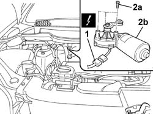
Applies to: engines: 2.0 16v; all production periods
1. Turn retaining bolts (1a) through 90° and remove coil cover (1b).
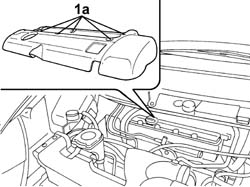
Applies to: engines: 2.0 16v; all production periods
1. Disconnect the electrical connections for the coils.
2. Undo retaining bolts (2a) and remove coils (2b).
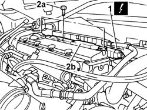
Applies to: engines: 2.0 16v; all production periods
1. Disconnect quick-release connectors (1a) from the oil vapour separator and from the rigid air intake sleeve on the throttle body and place piping (1b) to one side.
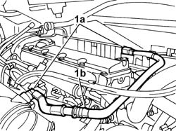
Applies to: engines: 2.0 16v; all production periods
1. Undo retaining bolts (1a) and remove the left cam cover (intake side) (1b).
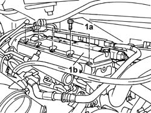
Applies to: engines: 2.0 16v; all production periods
1. Disconnect quick-release connector (1a) from the single fuel delivery pipe manifold and quick-release connector (1b) on the fuel vapour return pipe from the throttle body.
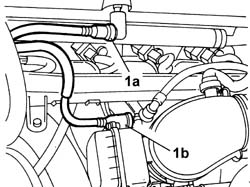
Applies to: engines: 2.0 16v; all production periods
1. Use tool (1a) to lock the pulleys, unscrew retaining bolts (1b) and remove pulleys (1c).
Description | Code | Function | |
|---|---|---|---|
1a | Counter-torque | Locking toothed driven pullies |
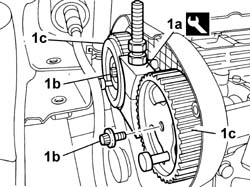
Applies to: engines: 2.0 16v; all production periods
1. Unscrew bolts (1a) and remove the driven timing pulley rear guard (1b).
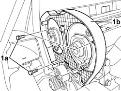
Applies to: engines: 2.0 16v; all production periods
1. Undo the fixing bolts (1a) following the order illustrated and remove the left cylinder head extension (1b).
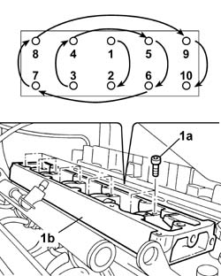
Applies to: engines: 2.0 16v; all production periods
1. Remove the valve gear drive camshaft from the left camshaft housing.
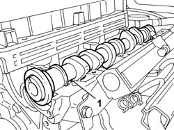
Applies to: engines: 2.0 16v; all production periods
Refitting
RemovingA - Intake side camshaft.
E - Exhaust side camshaft.
Position the valve gear camshaft in the left camshaft housing.
Thoroughly clean the matching surfaces and renew the sealant on the fitting surface.
1. Position the left cylinder head extension (1a) and tighten retaining bolts (1b) to torque in the order shown in the figure.
Value daNm | Fastening | Component | dia | |
|---|---|---|---|---|
1b | 0.5 +1 | Bolt | LEFT CAMSHAFT HOUSING - Replace gasket |
Applies to: engines: 2.0 16v; all production periods
Fit the rear shield for the driven pulleys.
Tighten the bolts fixing the rear shield for the pulleys.
Fit the pulleys and screw in the fixing bolts without tightening them.
Fit the counter-torque tool to lock the pullies and tighten the fixing bolts.
Description | Code | Function | |
|---|---|---|---|
. | Counter-torque | Locking toothed driven pullies |
Connect the rapid connectors on the throttle body disconnected previously.
1. Fit the left cam cover (1a) and tighten cam cover retaining bolts (1b) in the order shown in the figure.
Value daNm | Fastening | Component | dia | |
|---|---|---|---|---|
. | 0.5 + 1.1 | Bolt | Left TAPPET COVER - R.R. and Replace gasket |
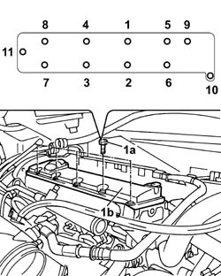
Applies to: engines: 2.0 16v; all production periods
Connect the rapid connectors for the oil vapour separator and the rigid air inlet hose on the throttle body.
Fit the coils in position and tighten the fixing bolts.
Connect the electrical connection for the coils.
Fit the coil cover and restore the fastenings.
Fit the windscreen wiper motor and tighten the fixing bolts.
See
Op. 1008C10 POWER UNIT UPPER SUPPORT - R R
See
Op. 1032B10 TOOTHED TIMING BELT - R + R FOR TIMING ADJUSTMENT OR REPLACEMENT
See
Op. 1032D12 TIMING SYSTEM PROTECTIVE COVER(S) - R + R
See
Op. 1092A10 CRANKSHAFT PULLEY - R + R
See
Op. 1092G10 SINGLE ENGINE BELT - R.R
See
Op. 4410D16 BRACKET (ONE) RETAINING CHASSIS TO BODY - R R
Right front
See
Op. 7055B91 RIGHT FRONT WHEEL ARCH LINER - R.R.
See
Op. 4450B04 RIGHT FRONT WHEEL - R.R
See
Op. 7055B54 UNDER ENGINE PROTECTION/GUARD - R.R.
See
Op. 1088B10 ENGINE COOLANT SUPPLY RESERVOIR - R.R.
See
Op. 1048A39 SLEEVE FROM AIR CLEANER TO RIGID PIPE - R R
See
Op. 1048A10 AIR FILTER ASSEMBLY - R.R.
See
Op. 5010B18 CLIMATE CONTROL UNIT AIR INTAKE - R.R.
Connect the negative battery terminal.
See
Op. 5530B56 BATTERY DRIP TRAY COVER - R.R.
See
Op. 0010T21 ENGINE COOLANT - CHECK DENSITY AND CHANGE, IF NECESSARY
Topics linked from this page (16)
- 0010T21 ENGINE COOLANT - CHECK DENSITY AND CHANGE, IF NECESSARY
- 1008A46 POWER UNIT RIGID SUPPORT - TIMING SIDE - R.R.
- 1008C10 POWER UNIT UPPER SUPPORT - R R
- 1032B10 TOOTHED TIMING BELT - R + R FOR TIMING ADJUSTMENT OR REPLACEMENT
- 1032D12 TIMING SYSTEM PROTECTIVE COVER(S) - R + R
- 1048A10 AIR FILTER ASSEMBLY - R.R.
- 1048A39 SLEEVE FROM AIR CLEANER TO RIGID PIPE - R R
- 1088B10 ENGINE COOLING TANK - R + R
- 1092A10 CRANKSHAFT PULLEY - R + R
- 1092G10 SINGLE ENGINE BELT R R
- 4410D16 BRACKET (ONE) RETAINING CHASSIS TO BODY - R R
- 4450B04 RIGHT FRONT WHEEL R R
- 5010B18 CLIMATE CONTROL UNIT AIR INTAKE - R.R.
- 5530B56 BATTERY DRIP TRAY COVER - R.R.
- 7055B54 UNDER-ENGINE GUARD - R R
- 7055B91 RIGHT FRONT WHEEL ARCH LINER - R.R.